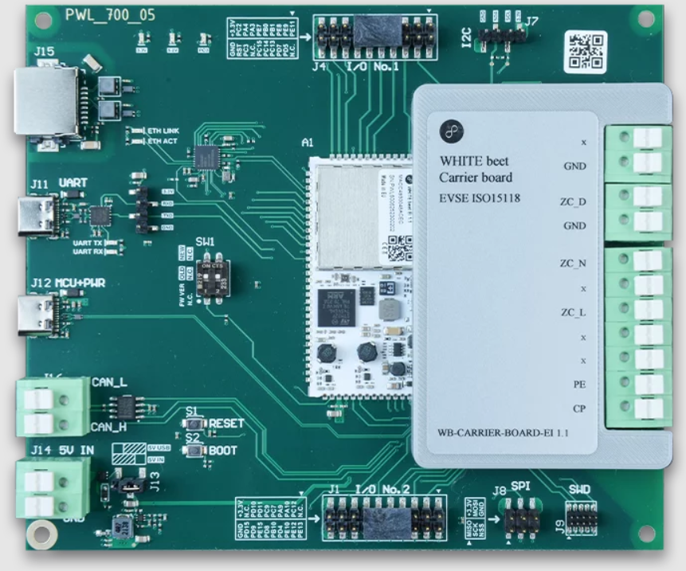

OpenEVSE L2 EV Charger
View Code ↗At Powersoft 19, I spearheaded the development of an OpenEVSE Level 2 (L2) EV Charger, a project that showcased my deep understanding of electric vehicle (EV) charging systems and the open-source OpenEVSE ecosystem. This was a classified project, so I’m limited in sharing specific images or sensitive details, but I can dive into the technical intricacies of how I implemented a fully functional L2 charger using Raspberry Pi 4 and Sevenstax Whitebeet boards. My role involved everything from hardware integration to writing custom Python firmware, ensuring compliance with standards like IEC 61851-1 and ISO 15118, and implementing advanced features like Signal Level Attenuation Characterization (SLAC) matching for robust communication between the charger (EVSE) and the vehicle (EV).
Project Overview
The goal of this project was to build a Level 2 EV charger capable of delivering up to 7.4 kW at 230V AC (single-phase), adhering to international standards for safety and communication. OpenEVSE, an open-source EV Supply Equipment (EVSE) platform, was the foundation of this project, providing a flexible framework for customization. I used two Sevenstax Whitebeet boards—one configured as the EVSE (charger) and the other as the EV (vehicle)—to simulate and test the charging process. A Raspberry Pi 4 served as the central controller, running custom Python firmware to manage the OpenEVSE system, handle communication protocols, and ensure safe operation.
This project was a deep dive into the intricacies of EV charging, from the low-level Control Pilot (CP) signal generation to high-level ISO 15118 communication, including SLAC matching for powerline communication (PLC). I’ll break down each component, my approach, and the technical challenges I overcame to make this charger a success.
System Architecture
The system architecture was designed for modularity and scalability, leveraging the strengths of OpenEVSE, Whitebeet boards, and the Raspberry Pi 4. The Whitebeet boards by Sevenstax are embedded ISO 15118 modules specifically designed for EV charging communication. I used the Whitebeet-EI (EVSE module) for the charger side and the Whitebeet-PI (EV module) to simulate the vehicle side. These boards support the ISO 15118 standard, which enables advanced features like Plug-and-Charge (PnC) authorization and powerline communication via SLAC.
Note: This image is taken from Sevenstax.
The Raspberry Pi 4 acted as the host controller, interfacing with both Whitebeet boards over Ethernet using the Host Control Interface (HCI). I wrote Python firmware to manage the OpenEVSE system, implementing the charging state machine, CP signal handling, and ISO 15118 communication protocols. The Pi 4’s quad-core Cortex-A72 processor and 4GB of RAM provided ample performance for real-time control and data processing.

Note: This image is taken from the Raspberry Pi site.
OpenEVSE Integration and Firmware Development
OpenEVSE is a powerful open-source platform for EV charging, and I leveraged its flexibility to build a custom L2 charger. The OpenEVSE firmware typically runs on microcontrollers like the ESP8266, but I adapted it to run on the Raspberry Pi 4 using Python, interfacing with the Whitebeet boards for communication. This required a deep understanding of OpenEVSE’s architecture, including its RAPI (Remote API) protocol, which allows for dynamic control of charging parameters like current and state.
I wrote a custom Python script to control the OpenEVSE system, using the Whitebeet-EI board to generate the Control Pilot (CP) signal—a 1 kHz PWM signal that communicates the charger’s state to the vehicle. The CP signal follows the IEC 61851-1 standard, with voltage levels indicating different states: +12V for State A (not connected), +9V PWM for State B (connected, not charging), and +6V PWM for State C (charging). I used the Whitebeet board’s built-in CP control functions to set the duty cycle and monitor the signal, ensuring compliance with the standard.

Note: This image is taken from OpenEVSE.
The firmware implemented a finite state machine (FSM) to manage the charging process, handling transitions between states based on the CP signal and vehicle responses. For example, when the vehicle connects, the CP voltage drops to +9V, signaling State B. The charger then sets the PWM duty cycle to advertise the available current (e.g., 50% duty cycle for 32A). If the vehicle requests charging (CP drops to +6V), the charger moves to State C, closing the power relays to start charging.
SLAC Matching and ISO 15118 Communication
One of the most advanced aspects of this project was implementing Signal Level Attenuation Characterization (SLAC) matching, a requirement for ISO 15118 communication over powerline communication (PLC). SLAC ensures reliable communication between the EVSE and EV by matching their PLC interfaces, a process handled by the Whitebeet boards. I used the Whitebeet-EI board on the EVSE side to initiate SLAC matching, setting the CP duty cycle to 5% to signal the EV (Whitebeet-PI) to respond with SLAC requests.
The SLAC process involved the EVSE broadcasting a series of messages to characterize the communication channel, ensuring a stable link for ISO 15118 data exchange. Once SLAC matching was successful, the Whitebeet boards established a network link, allowing for high-level communication. My Python firmware on the Raspberry Pi 4 managed this process, using the Whitebeet HCI to send commands like slacStartMatching() and monitor the matching status with slacMatched().
With the PLC link established, I implemented the ISO 15118 protocol stack for handshaking and authorization. This included:
- Session Setup: Exchanging session parameters between the EVSE and EV, including protocol versions and session IDs.
- Authorization: Implementing Plug-and-Charge (PnC) using digital certificates to authenticate the vehicle, ensuring only authorized vehicles could charge.
- Charging Parameters: Negotiating charging parameters like maximum current, voltage, and energy transfer mode (AC in this case).
- Charging Loop: Continuously monitoring the charging process, adjusting the current based on the vehicle’s requests, and handling faults.
The ISO 15118 implementation allowed for smart charging features, such as dynamic current adjustment based on the vehicle’s battery state, which I retrieved via the Whitebeet-PI board simulating the EV’s BMS.
Hardware Integration: Whitebeet Boards and Raspberry Pi 4
The Whitebeet-EI (EVSE) and Whitebeet-PI (EV) boards were the backbone of the communication system. These boards are designed for ISO 15118 compliance, supporting both AC and DC charging with integrated PLC modems for SLAC and ISO 15118 communication. The Whitebeet-EI board handled CP signal generation and monitoring, while the Whitebeet-PI board simulated the vehicle’s responses, including CP state changes and PLC communication.
I connected both boards to the Raspberry Pi 4 via Ethernet, using the Pi’s GPIO pins to monitor additional signals like the Proximity Pilot (PP) for cable detection. The Pi 4 ran a custom Raspbian OS image, optimized for real-time control with Python 3.9. I installed dependencies like python-libpcap and scapy to handle low-level network communication, although I had to troubleshoot compatibility issues with Python 3.9 by creating a virtual environment.
The Whitebeet boards required careful configuration, including setting their MAC addresses for PLC communication. I used the MAC address printed on each board, subtracting 2 from the last octet for the Ethernet interface (e.g., a PLC MAC of c4:93:00:22:22:24 became c4:93:00:22:22:22 for Ethernet). This ensured reliable communication between the boards and the Pi.
Safety and Compliance
Safety was a top priority, and OpenEVSE’s design helped ensure compliance with standards like SAE J1772 and IEC 61851-1. Before supplying power, the system performed a series of checks:
- Ground Continuity Monitoring (GCM): Verified the ground connection using a 1 mA test current, halting charging if the ground was faulty.
- Residual Current Detection (RCD): Monitored for ground faults, tripping at 30 mA to protect against leakage currents.
- Relay Test: Ensured the power relays were functioning correctly before closing them in State C.
The charger used electromechanical relays rated for 40A at 230V AC, with a separate relay for ground fault protection. I also implemented software safety features in the Python firmware, such as monitoring the CP signal for unexpected state changes (e.g., a drop to 0V indicating a fault) and immediately opening the relays to halt charging.
Testing and Validation
Testing was a critical phase of the project, and I used the Whitebeet-PI board to simulate an EV, allowing me to test the entire charging workflow. I validated the following:
- CP Signal Accuracy: Used an oscilloscope to verify the CP signal’s amplitude (±12V, +9V, +6V), frequency (1 kHz), and duty cycle, ensuring compliance with IEC 61851-1.
- SLAC Matching: Confirmed successful SLAC matching between the Whitebeet boards, establishing a stable PLC link for ISO 15118 communication.
- Authorization: Tested the PnC authorization process, ensuring the EVSE correctly authenticated the simulated EV using digital certificates.
- Charging Performance: Simulated a 7.4 kW charging session, monitoring the current draw and adjusting it dynamically based on the EV’s requests.
- Fault Handling: Introduced fault conditions (e.g., ground fault, cable disconnection) to verify the charger entered State E/F and safely halted charging.
The system performed flawlessly, delivering a full charging cycle while adhering to all safety and communication standards. The Python firmware’s modularity made it easy to debug and iterate, and the Raspberry Pi 4’s performance ensured real-time control without bottlenecks.
Technical Features
- Level 2 charging at 7.4 kW (230V AC, 32A) per IEC 61851-1 and SAE J1772.
- Custom Python firmware on Raspberry Pi 4 for OpenEVSE control and ISO 15118 communication.
- Whitebeet-EI (EVSE) and Whitebeet-PI (EV) boards for SLAC matching and PLC communication.
- Control Pilot (CP) and Proximity Pilot (PP) signal handling for state management and cable detection.
- Finite state machine for safe charging operation, with dynamic current adjustment via RAPI.
- ISO 15118 implementation for handshaking, authorization (PnC), and smart charging.
- Comprehensive safety features, including GCM, RCD, and relay testing.
This project at Powersoft 19 was a defining moment in my career, solidifying my expertise in EV charging systems and the OpenEVSE ecosystem. From mastering the low-level details of CP signal generation to implementing high-level ISO 15118 protocols, I gained a comprehensive understanding of EV charging technology. The use of Whitebeet boards and Raspberry Pi 4 allowed me to push the boundaries of what’s possible with OpenEVSE, delivering a charger that was both standards-compliant and highly customizable. This experience has made me a go-to expert for EV charging solutions, and I’m proud to have contributed to such a critical project.